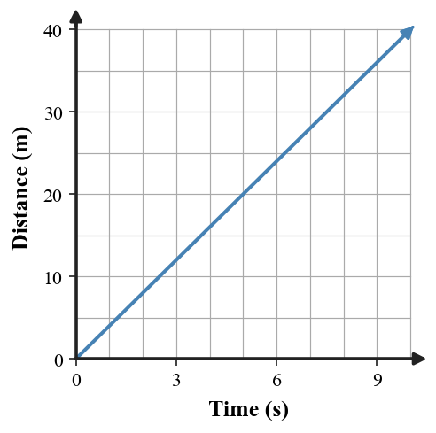

1. State the relationship used to calculate average speed from total distance and total time.
2. Classify each as speed or velocity: 9 m/s; 9 m/s south; 65 km/h west.
3. A dashboard shows 72 km/h at one instant. Is this an average speed or an instantaneous speed? Explain with one phrase.
4. What two features must remain unchanged for an object to have constant velocity?
5. Explain why speed is a scalar quantity while velocity is a vector quantity.
6. A delivery robot travels 180 m in 15 s. Calculate its average speed and interpret the answer in words.
7. Use the distance–time graph. Determine the object’s constant speed from two convenient points and explain what the straight-line pattern means.

8. A runner covers 260 m in 20 s and then continues at the same average speed for 12 s. Determine the additional distance traveled during those 12 s.
9. Trip A covers 90 km in 1.5 h without stopping. Trip B covers the same 90 km in 1.5 h but includes a 15-minute stop. Compare the average speeds, then explain what must be different about at least some instantaneous speeds.
10. A cyclist rides 6 m/s east for one part of a trip and later 6 m/s west. Compare the two speeds and the two velocities.
11. A classmate says, “Two objects with the same speed have the same velocity.” Critique the statement and give a counterexample that preserves equal speed but changes direction.
12. A car moves around a circular track while its speedometer stays at 20 m/s. Decide whether its speed and velocity are constant. Defend your answer using magnitude and direction.
13. A cart travels 84 m in 7 s. What is its average speed?
14. Which value is most likely an instantaneous speed?
15. Which option gives both a speed magnitude and a direction?
16. Which statement about velocity is correct?
17. Which motion has constant speed but changing velocity?
18. Which motion has constant velocity?
19. A trip has an average speed of 50 km/h. Which conclusion is justified?
20. Two runners each move at 5 m/s, one north and one west. They have